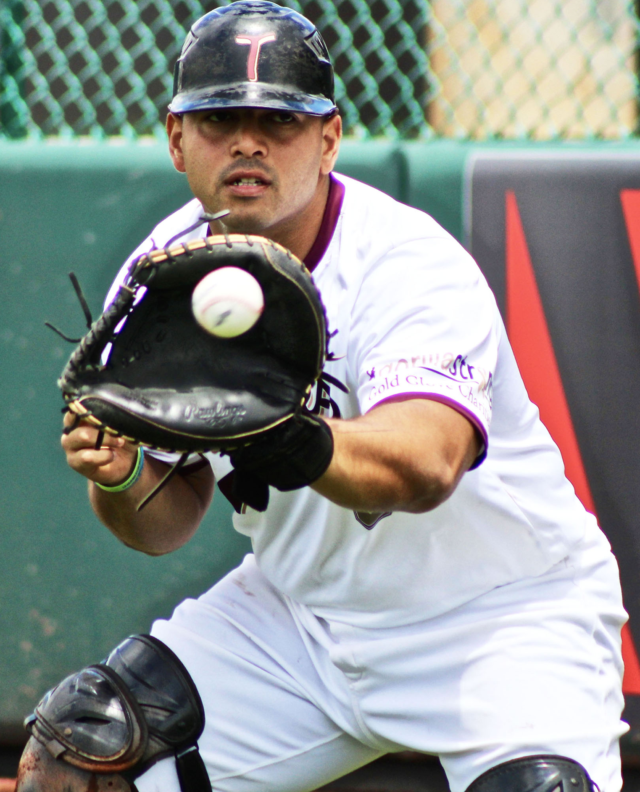
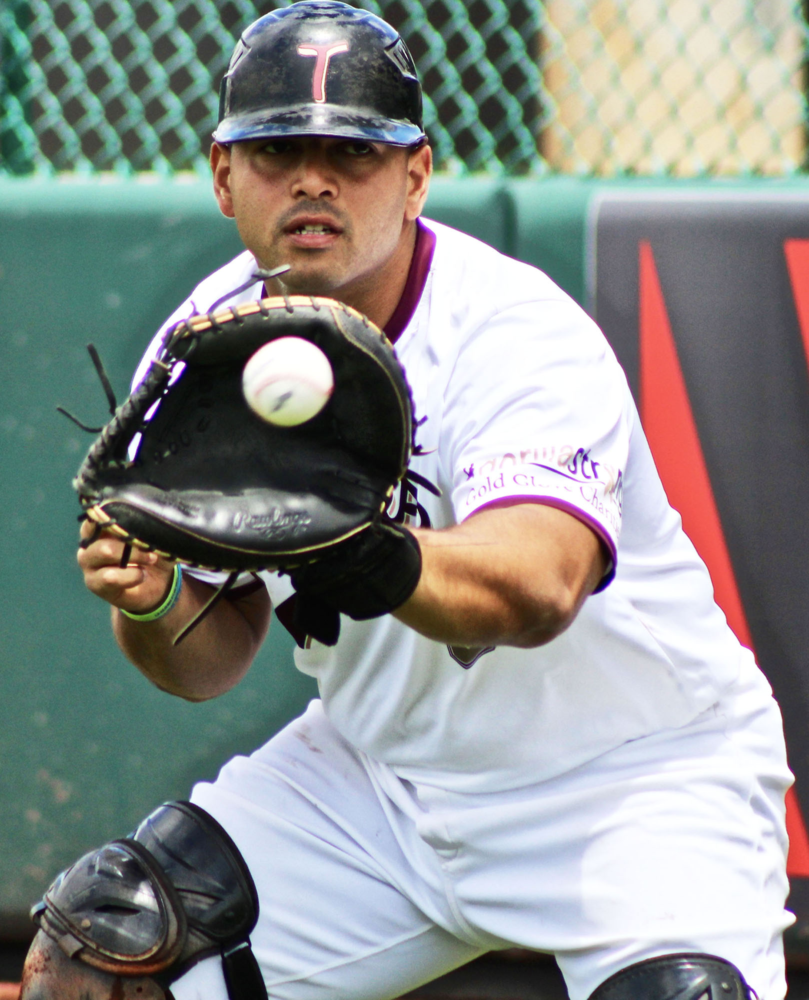
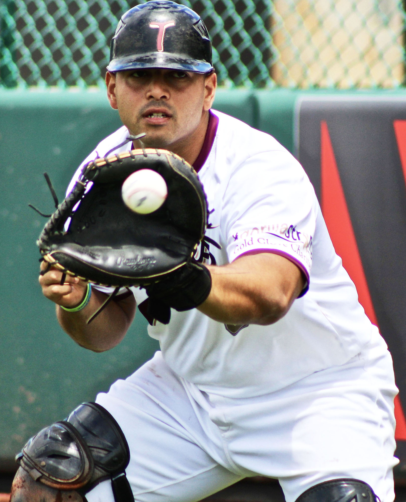

These are a few topics of things people may want to know about exercising, especially in the middle of a global pandemic. Some of the common questions are listed below.
Getting exercise should be a fun time, and the photo gallery shows a few different forms of exercise people can do. Anything from riding your bike to walking your dog will count.
Creating new ways of exercise can be just as fun. Don't feel judged if you want to make something up. Have fun with it! Movement can help anyone feel more postive about their day.

Don't try to get this time for the first few weeks. It is better to ease back into a routine.
Getting back into shape does not happen immediately, and starting slow can help. Try to add 30 minutes or an hour every week to pace yourself! It can be a little motivational challenge within a family.
Children between age 6-17 should try to get at least 60 minutes of exericse per day.
Kids under 6 need exercise still. Stretching and short walks are ideas for them. One idea is to ask your kids to show their favorite game from PE.
It might feel weird to be outside without a mask, but it is safe. Getting some outside space is dire to mental health.
Bike riding or going on a walk with the family you live with is the best option. If you feel unsafe in any way, feel free to wear your mask.
Try to maintain social distance between groups of people you don't live with to follow health regulations.
It is recommended by the CDC that playgrounds and other gym equipment aren't used. People touch these surfaces, and it is hard to keep them clean often.
If children are going to use them, they need to make sure they don't touch their eyes or face after getting off the equipment. It is important to sanitize their hands immediately.
This is the perfect time to be creative. Some gyms and community centers have started to move their classes to be on live streams. Exercising from home can be just as effective as a studio.
Colleges and universities have rec centers that are live streaming as well. Mizzou has free virtual Tiger X classes this year for all interested students and faculty.
If you don't have weights, that is okay! Some options for weights are to use laundry detergent bottles or sand bags. These can help create extra resistance.